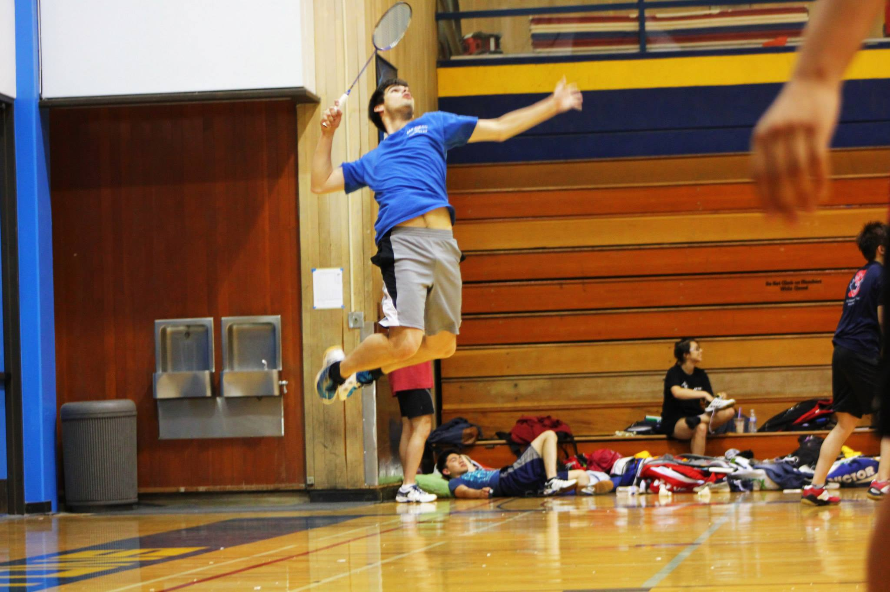

Anthony Bahadir Lopez
University of California, San Diego
9500, Gilman Drive
La Jolla, CA 92093
abl012@ucsd.edu
Who Am I and Why Did I Make CAN I HAZ CODE HELP?
Coming into UC San Diego with no prior knowledge of computer science, I had no idea what I was getting myself into. It was a realm so different from all the other Science, Technology, Engineering and Mathematics (STEM) fields. Diving into my first program was like writing an essay in a new language! But I soon found out how fun and rewarding it was to write those essays. As a result, I became an undergraduate tutor at the Computer Science department for courses that I previously excelled in. I noticed that with the tutoring system, students tend to learn and succeed more often! Plus, tutors learn a lot from the experience as well! From my experiences as a tutor, I strongly believe that having fun and learning through different techniques (visual, audible, etc) can really help people learn. And for this reason, I wanted to expand on my duties as a previous tutor (who still helps people out when possible) with this website!
Can I Haz Code Help is a site designed for beginner audiences, dedicated to teaching them a programming language called LolCode as opposed to more mainstream languages such as C, C++, Java, etc. I chose this language because it follows similar mechanics to those mainstream languages AND IT IS FUNNY. Who doesn't like a good laugh? :)
Enjoy!
From my experiences as a tutor, I strongly believe that having fun and learning through different techniques (visual, audible, etc) can really help people learn. And for this reason, I wanted to expand on my duties as a previous tutor (who still helps people out when possible) with this website!
Can I Haz Code Help is a site designed for beginner audiences, dedicated to teaching them a programming language called LolCode as opposed to more mainstream languages such as C, C++, Java, etc. I chose this language because it follows similar mechanics to those mainstream languages AND IT IS FUNNY. Who doesn't like a good laugh? :)
Enjoy!
My Hobbies and Interests
Helping and tutoring others! Solving programming challenges on hackerrank.com
Practicing, playing, and watching badminton and soccer! Learning about new software and hardware!
LinkedIn Github

For research projects, click here: Research Project Presentations
For my resume/CV, click here: Resume